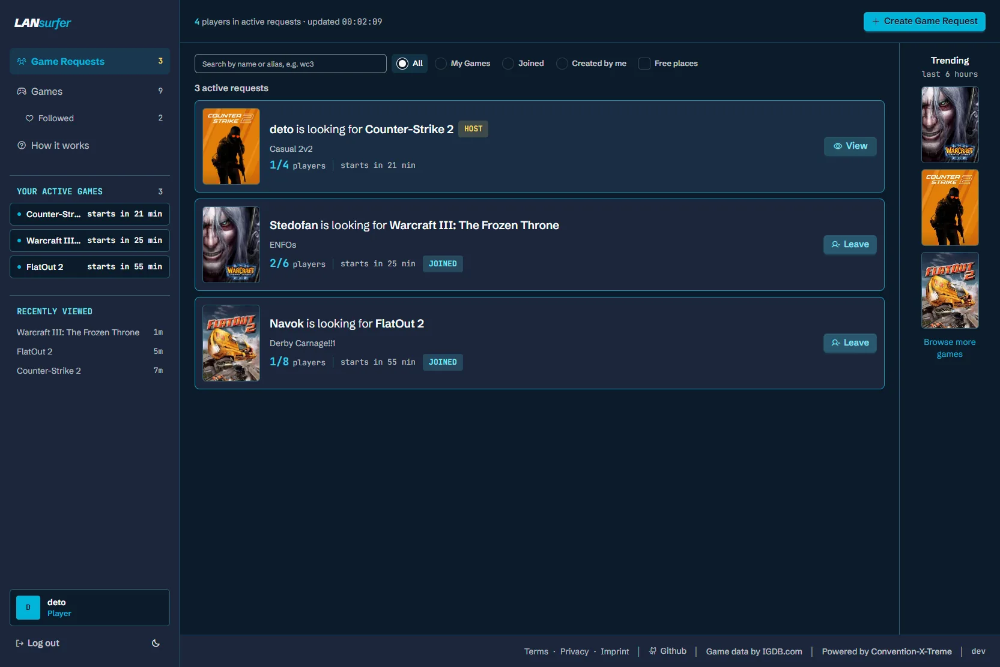
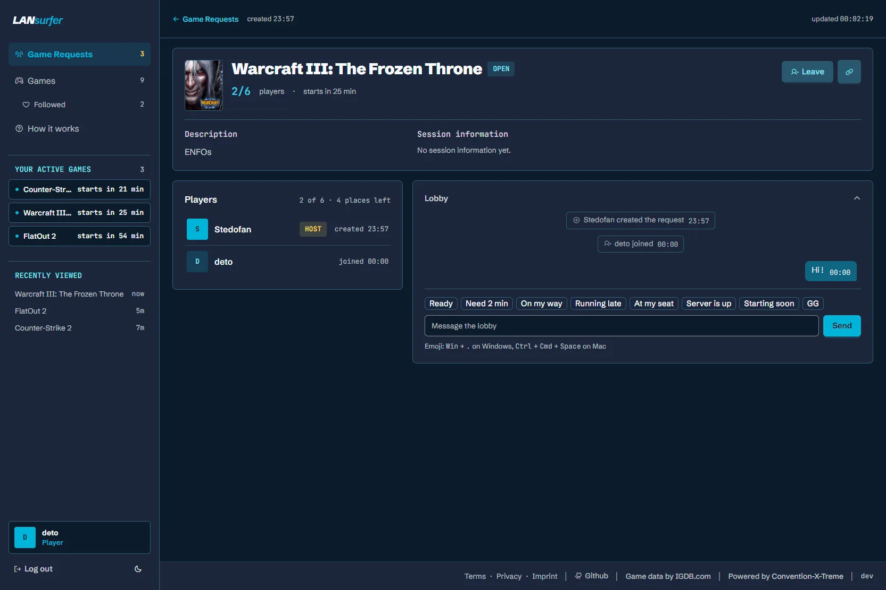
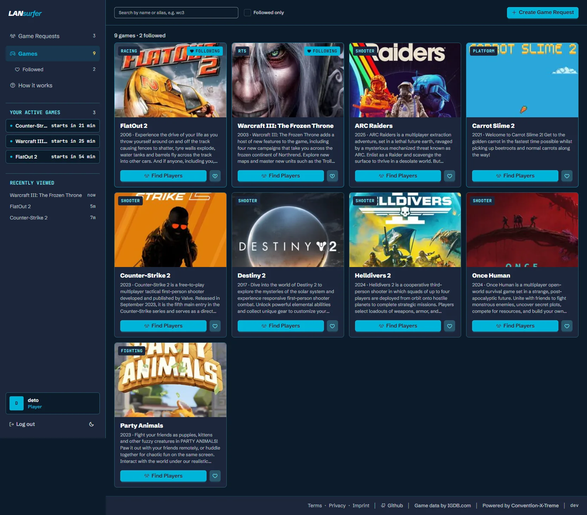
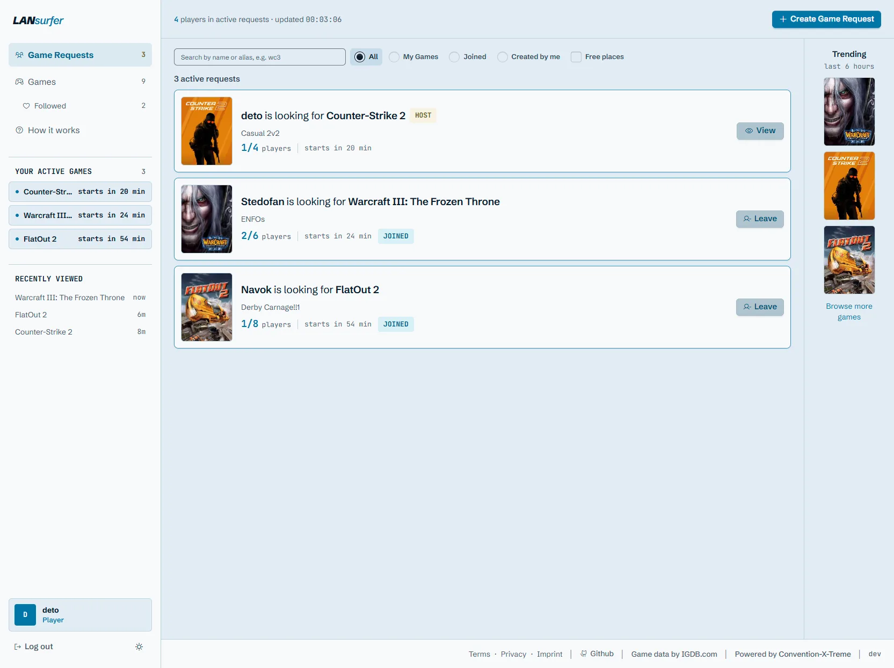

Was ist LANsurfer?
Vielleicht eine schnelle Runde Counter-Strike. Vielleicht FlatOut 2, eine OpenTTD-Session bis zum Morgengrauen oder dieses obskure Spiel, das du seit zwanzig Jahren nicht mehr gestartet hast. Die Chancen stehen gut, dass es noch jemand dabeihat.
LANsurfer gibt allen auf eurem Event einen gemeinsamen Ort: sehen, was andere spielen wollen, Lieblingsspielen folgen und eine Runde zusammenbekommen. Entstanden ist es auf der CXT, einer LAN-Party mit rund 400 Teilnehmenden – als Open Source für LAN-Veranstalter und Gaming-Communities überall.
So funktioniert's
Läuft in jedem Browser auf Desktop und Smartphone. Keine App nötig.
Spielen folgen
Wähle die Spiele, die du spielen möchtest, und finde sie mit einem Filter wieder.
Mitspieler finden
Erstelle einen Game Request mit Startzeit, optionalem Spielerlimit und kurzer Beschreibung.
Zusammen spielen
Stöbere durch die Requests, sieh, wer noch Leute sucht, und steig ein. Live-Updates halten die Spielerzahlen aktuell.
Ein Blick hinein




Gemacht für eure Community
Eure LAN, eure Instanz
Betreibt LANsurfer auf eurer eigenen Infrastruktur und pflegt die Spiele für euer Event selbst.
Ein Platz für die Klassiker
Euer Spielekatalog enthält die Spiele, die eure Community wirklich spielt – auch die weniger bekannten.
Einfach mitmachen
Schnelle, gut lesbare Game Requests auf Desktop und Smartphone.
Offen entwickelt
Freie Software unter der AGPL-3.0. Spieler, Veranstalter, Designer und Entwickler gestalten sie gemeinsam.
LANsurfer selbst hosten
Du organisierst eine LAN-Party oder betreust eine Gaming-Community? Release wählen, die passenden Docker-Compose- und Umgebungsdateien herunterladen, Domain und Login-Anbieter einrichten, starten. Kein Git-Clone, kein Go, Node.js oder Python nötig. Beispiele für Caddy und Traefik sind dabei. Die Anleitung ist auf Englisch.
Mach mit
Du hast schon mal eine LAN organisiert? Den halben Abend nach einem vierten Spieler gesucht? Deine Sicht interessiert uns. Hilf bei Design, Entwicklung, Dokumentation, Fehlerberichten oder beim Testen auf LAN-Events.